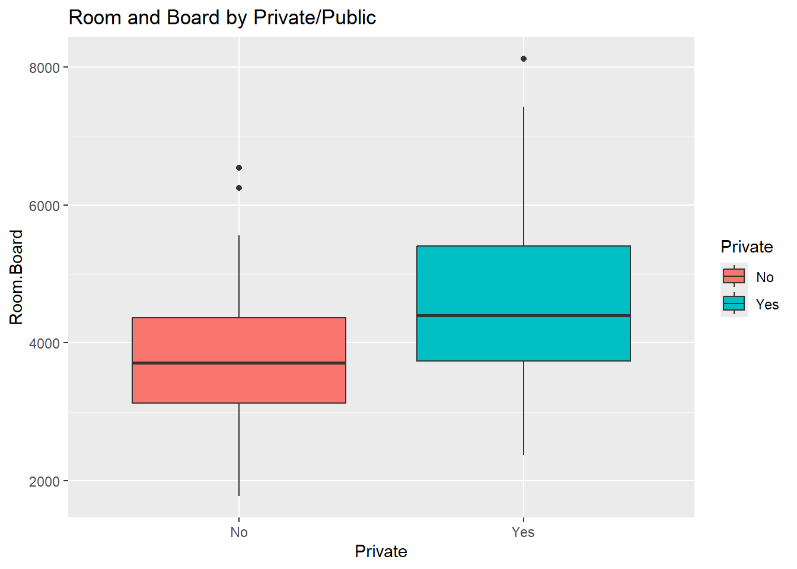
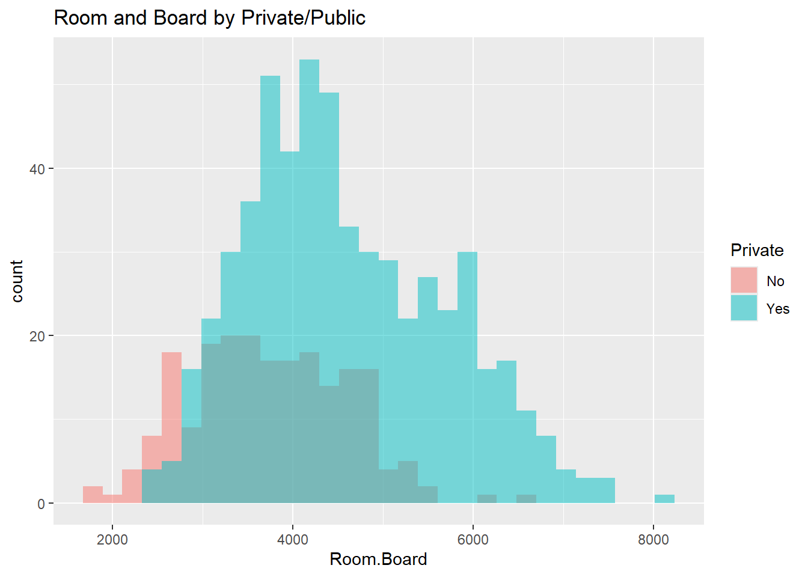
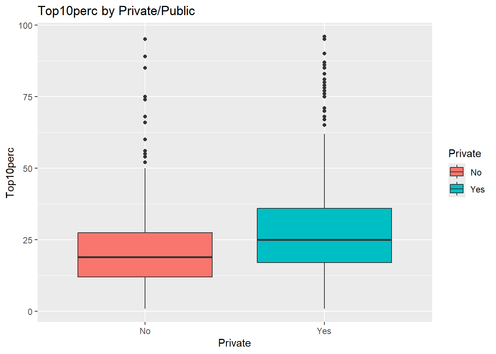
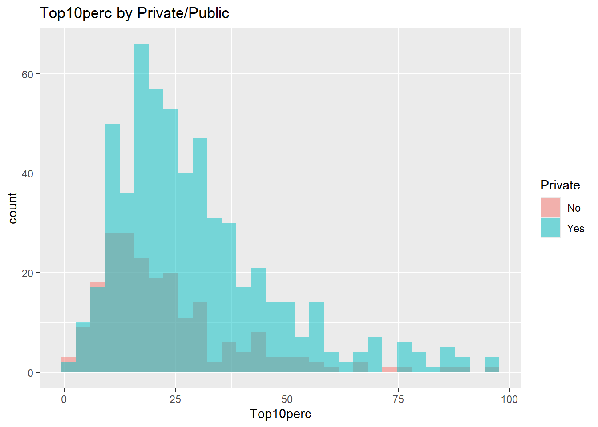
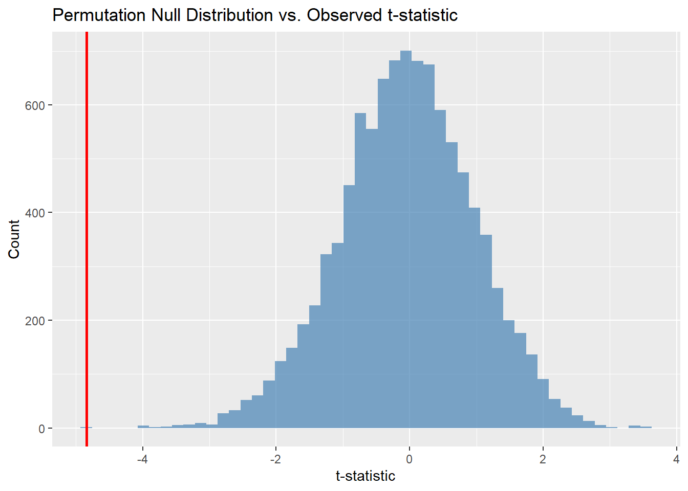

library(tidyverse)
library(ISLR2)
data("College")Solutions
Assignment 1: Two-Sample Tests & Permutation Tests
Question 1: Room and Board Costs
(a) Boxplot and histograms
ggplot(College, aes(y = Room.Board, x = Private, fill = Private)) +
geom_boxplot() +
ggtitle("Room and Board by Private/Public")
ggplot(College, aes(x = Room.Board, fill = Private)) +
geom_histogram(alpha = 0.5, position = "identity", bins = 30) +
ggtitle("Room and Board by Private/Public")
(b) Is the t-test justified?
The histograms show approximately normal distributions for both groups, with similar shapes. The two-sample t-test is justified here.
(c) Two-sample t-test
College %>%
group_by(Private) %>%
summarize(
mean = mean(Room.Board),
sd = sd(Room.Board),
n = n()
)# A tibble: 2 × 4
Private mean sd n
<fct> <dbl> <dbl> <int>
1 No 3748. 858. 212
2 Yes 4586. 1090. 565t.test(Room.Board ~ Private, data = College)
Welch Two Sample t-test
data: Room.Board by Private
t = -11.222, df = 478.09, p-value < 2.2e-16
alternative hypothesis: true difference in means between group No and group Yes is not equal to 0
95 percent confidence interval:
-984.6203 -691.1853
sample estimates:
mean in group No mean in group Yes
3748.241 4586.143 The variances differ between groups, so we use the Welch t-test (R’s default). The p-value is very small, indicating a significant difference in room and board costs between private and public colleges.
(d) One-sided test
t.test(Room.Board ~ Private, data = College, alternative = "greater")
Welch Two Sample t-test
data: Room.Board by Private
t = -11.222, df = 478.09, p-value = 1
alternative hypothesis: true difference in means between group No and group Yes is greater than 0
95 percent confidence interval:
-960.9587 Inf
sample estimates:
mean in group No mean in group Yes
3748.241 4586.143 Question 2: Top 10 Percent & Permutation Test
(a) Boxplots and histograms
ggplot(College, aes(y = Top10perc, x = Private, fill = Private)) +
geom_boxplot() +
ggtitle("Top10perc by Private/Public")
ggplot(College, aes(x = Top10perc, fill = Private)) +
geom_histogram(alpha = 0.5, position = "identity", bins = 30) +
ggtitle("Top10perc by Private/Public")
(b) Observed t-statistic
College %>%
group_by(Private) %>%
summarize(
mean = mean(Top10perc),
sd = sd(Top10perc)
)# A tibble: 2 × 3
Private mean sd
<fct> <dbl> <dbl>
1 No 22.8 16.2
2 Yes 29.3 17.9observed_t <- t.test(Top10perc ~ Private, data = College)$statistic
observed_t t
-4.843284 (c) Normality assessment
The histograms show right-skewed distributions, particularly for private colleges. The normality assumption is not well-satisfied. A permutation test is a better alternative since it makes no distributional assumptions.
(d) Permutation test
set.seed(191)
n_iterations <- 10000
t_stat_shuffle <- numeric(n_iterations)
for (i in 1:n_iterations) {
shuffled_private <- sample(College$Private)
t_stat_shuffle[i] <- t.test(Top10perc ~ shuffled_private, data = College)$statistic
}ggplot(data.frame(t = t_stat_shuffle), aes(x = t)) +
geom_histogram(bins = 50, fill = "steelblue", alpha = 0.7) +
geom_vline(xintercept = observed_t, color = "red", linewidth = 1) +
ggtitle("Permutation Null Distribution vs. Observed t-statistic") +
labs(x = "t-statistic", y = "Count")
perm_pvalue <- mean(abs(t_stat_shuffle) >= abs(observed_t))
cat("Permutation p-value:", perm_pvalue, "\n")Permutation p-value: 0 The permutation p-value confirms the parametric result: there is a significant difference in Top10perc between private and public colleges, and this conclusion holds without assuming normality.
Question 3: Sign Test
(a)
data("Fund")
manager14_returns <- Fund$Manager14
n_positive <- sum(manager14_returns > 0)
cat("Number of positive months for Manager14:", n_positive, "out of 50\n")Number of positive months for Manager14: 31 out of 50(b)
(c)
(d)
(e)
(f)
Question 4: One-Way ANOVA
(a)
data("Wage")(b)
(c)
(d)
(e)
(f)